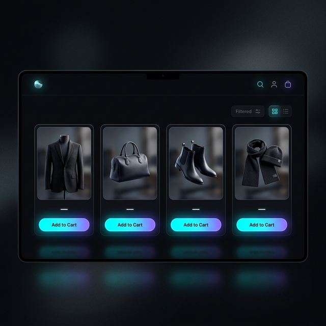
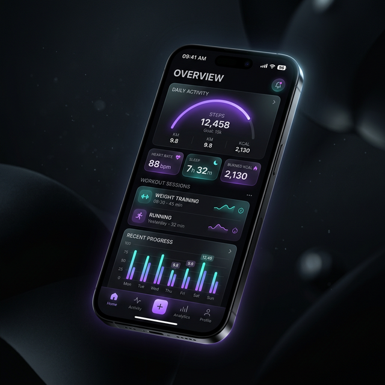

Intro DevForge • crescimento sem confusão
Sua empresa aparece, responde, organiza e cresce.
A DevForge transforma atenção vinda de TikTok, Instagram e Google em página clara, atendimento com IA, banco de dados seguro e sistema que sua equipe usa na rotina.
Projetos digitais para sua empresa crescer
Criamos automações, sistemas e páginas que transformam atendimento em venda organizada.
A DevForge planeja e desenvolve landing pages, sistemas internos, banco de dados, integrações e IA aplicada. Sua empresa capta lead, responde rápido, guarda histórico, reduz trabalho manual e vê os números para decidir.
grow_company --landing --system --ai --secure_db
O que uma empresa quer resolver
Você precisa vender mais, responder melhor e parar de depender de planilha solta.
A DevForge cria a estrutura digital para sua empresa crescer com menos retrabalho: página que converte, sistema que organiza, banco de dados que guarda histórico e IA que acelera atendimento.
Landing page que gera conversa
Oferta clara, prova, perguntas respondidas e WhatsApp com mensagem pronta para o cliente chamar com contexto.
Sistema para a rotina da empresa
Cadastro, agenda, pedido, pagamento, status e follow-up saem da planilha e entram em fluxo controlado.
IA aplicada no atendimento
IA responde perguntas frequentes, separa leads por prioridade e entrega histórico para sua equipe.
Instagram e TikTok com funil
Quem vem de vídeo, anúncio, Google ou indicação entra no mesmo funil, sem conversa perdida.
Segurança para fechar contrato
Permissões, backup, logs, LGPD e histórico mostram que sua operação tem controle.
Banco de dados e dashboard
Você acompanha receita, origem dos leads, conversão, ticket, atrasos e gargalos sem caçar informação.
Máquina de crescimento
Do primeiro clique ao pedido, sua empresa precisa de um fluxo que não dependa de improviso.
O visitante chega por anúncio, rede social ou indicação. A DevForge conecta landing page, WhatsApp, CRM, banco de dados, IA e painel para a venda continuar depois do clique.
Atração com origem identificada
Você sabe se o contato veio de Instagram, TikTok, Google, campanha, indicação ou tráfego pago.
canal certoLanding page feita para converter
O cliente entende serviço, benefício, prova, prazo e próximo passo no celular.
menos dúvidaAtendimento com IA e contexto
IA e CRM registram dúvida, interesse, urgência e histórico para sua equipe responder melhor.
resposta rápidaBanco de dados e segurança
Permissões, logs, backup e histórico reduzem risco para cliente, equipe e gestão.
controle realEvolução depois do lançamento
Métricas, ajustes, suporte e novas automações mantêm o projeto útil na rotina.
crescimento contínuoServiços DevForge
Construímos a base digital para sua empresa vender, operar e escalar.
O projeto começa pelo gargalo que custa dinheiro hoje: falta de lead, atendimento bagunçado, sistema ausente, banco de dados fraco, tarefas manuais ou IA sem aplicação prática.
Landing pages
Páginas rápidas, claras e focadas em conversão para campanhas, serviços, produtos e captação de leads.
Sistemas sob medida
Portais, painéis, áreas logadas, gestão de pedidos, agenda, documentos, pagamentos e fluxo interno.
Automação com IA
Triagem, respostas, resumo de conversa, follow-up, geração de documentos e tarefas repetidas com revisão humana.
Banco de dados e dashboard
Modelagem de dados, histórico de clientes, indicadores, relatórios e painel para decisão.
Segurança e acesso
Permissões por perfil, backups, logs, LGPD, ambientes separados e cuidado com dados sensíveis.
Integrações
Conexões com WhatsApp, pagamento, agenda, ERP, CRM, e-mail, analytics, redes sociais e APIs internas.
Calculadora de crescimento
Veja quanto uma operação digital melhor pode liberar por mês.
Use a simulação para estimar receita destravada, horas economizadas e impacto de uma operação com sistema, automação, banco de dados e IA.
TikTok, Instagram e mercado
A tendência não é só postar mais. A tendência é responder e organizar melhor.
Um vídeo bom gera clique. A venda depende do que vem depois: landing page clara, WhatsApp rápido, lead salvo, IA com limite, follow-up e relatório.
O clique da rede social precisa cair em uma oferta preparada.
Cada campanha pode levar o cliente para uma página com oferta, prova, perguntas respondidas, WhatsApp, pagamento e remarketing.
- Links rastreáveis por campanha, criador e canal.
- Oferta feita para celular, com leitura rápida e CTA claro.
- Contato cai no WhatsApp com mensagem e contexto.
IA vale quando tira trabalho repetido da equipe.
A IA pode responder perguntas frequentes, separar leads por prioridade, resumir conversas e lembrar a equipe de fazer follow-up.
- Histórico do cliente salvo para não repetir pergunta.
- Respostas com limite e revisão humana.
- Alertas para lead quente, orçamento parado e tarefa atrasada.
Empresa compra melhor quando vê processo e controle.
Cliente sério olha prazo, suporte, dados, histórico e clareza antes de fechar. O sistema precisa mostrar que sua operação não depende de improviso.
- Permissões, logs, backup e controle de acesso.
- Status claro para cliente, equipe e gestão.
- Roadmap organizado por prioridade de negócio.
Seu cliente descobre fornecedor enquanto rola o feed.
A página precisa carregar rápido, explicar a oferta e levar a conversa para o canal certo.
Ver, perguntar e comprar precisa acontecer sem quebra.
Rede social, WhatsApp, pagamento e CRM precisam conversar para o lead não sumir.
Movimento prende atenção quando ajuda a entender.
Animação destaca oferta, processo e prova. Movimento sem função só atrapalha a venda.
IA precisa ter regra, histórico e responsável.
Automação boa acelera atendimento sem esconder o que foi feito ou quem aprovou.
Qualidade que aparece no uso
Design, animação e sistema precisam deixar a decisão mais fácil.
A interface precisa mostrar profissionalismo, carregar rápido, funcionar no celular e guiar o cliente para o próximo passo. A operação por trás precisa registrar tudo para a equipe continuar.


Sobre o Murilo
Você fala com quem transforma problema de empresa em sistema publicado.
Sou Murilo Caniloi Ambrosio, estudante de ADS e desenvolvedor Full Stack com foco em integração de IA, automação e produtos web. No meu GitHub aparecem projetos como DEVFORGE v2, Liftmax, app financeiro, daily planner e automações com Python, React, Vite, n8n e APIs de IA.
A DevForge nasceu dessa prática: pegar gargalo real de empresa e entregar landing page, sistema, banco de dados, automação e IA com uso claro para equipe, cliente e gestão.
Diagnóstico de negócio
Eu levanto oferta, público, rotina, gargalos, ferramentas atuais e metas antes de desenhar a solução.
Full Stack e IA
React, Vite, Python, automações, APIs de IA e integração com ferramentas reais da operação.
Projetos reais
Experiência com plataforma para cliente industrial, geração de PDF, automação n8n e presença digital.
Base para crescer
Performance, responsividade, banco de dados, segurança, deploy e evolução entram no planejamento.
Segurança desde o desenho
Dados, acessos, IA e histórico precisam estar sob controle.
Um sistema sério protege informação, registra ações importantes e deixa claro quem pode ver, editar ou aprovar cada parte da operação.
Identidade e acesso
Perfis de usuário, permissões por função e controle de acesso para cada pessoa ver só o que precisa.
Banco de dados protegido
Backups, ambientes separados, cuidado com dados sensíveis e estrutura alinhada à LGPD.
Logs e alertas
Logs, métricas e alertas ajudam a encontrar erro, lentidão ou falha antes de virar prejuízo.
IA com limite
Prompts, respostas, automações e decisões importantes ficam com regra, histórico e revisão humana.
Perguntas antes de contratar
Antes de investir, você precisa saber o que sua empresa vai ganhar.
Você precisa ver escopo, processo, prazo, segurança e suporte antes de investir. Assim a decisão sai do achismo e entra em prioridade de negócio.
Vou receber só um site bonito?
Não. A entrega pode incluir landing page, sistema, banco de dados, automação, dashboard, integração e IA.
Como começa?
Você mostra seu negócio, seus canais, sua rotina e seu maior gargalo. Eu devolvo uma rota de execução.
Quanto tempo leva?
Depende do escopo. Landing pages são mais rápidas. Sistemas, IA, banco de dados e integrações entram em etapas.
Vai funcionar no celular?
Sim. O projeto nasce pensando no cliente que vem de Instagram, TikTok, Google e WhatsApp.
E depois de publicar?
Você pode manter suporte, ajustes, novas automações, análise de métricas e evolução mensal.
Por que contratar a DevForge?
Porque o projeto começa no problema da empresa e termina em uma solução que cliente, equipe e gestão usam.
Investimento com lógica
A tecnologia certa aumenta venda, corta desperdício e mostra onde mexer.
Um projeto digital precisa pagar a conta: trazer contato melhor, economizar horas da equipe, reduzir erro, proteger dados e mostrar quais canais merecem investimento.
Página e oferta preparadas para transformar visita em conversa comercial.
Automação, área do cliente e integrações reduzem tarefas manuais.
Dashboard mostra o que vende, onde trava e qual canal merece atenção.
Planos por maturidade
Comece pelo gargalo que mais custa dinheiro hoje.
Alguns negócios precisam de uma landing page que gera lead. Outros precisam de sistema, automação, banco de dados, área do cliente e IA integrada à operação.
Página que gera lead
Para empresas que precisam explicar a oferta, captar contato e organizar o primeiro atendimento.
- Landing page de alta conversão
- WhatsApp com mensagem e origem rastreável
- Dashboard comercial essencial
- SEO técnico, performance e mobile
Sistema e automação
Para empresas que já vendem e precisam de sistema, IA, automação, dashboard e área do cliente.
- Sistema com área logada
- Banco de dados, CRM e painéis
- IA para triagem, resposta e produtividade
- Segurança, permissões, logs e backups
- Funil para Instagram, TikTok e WhatsApp
Projeto sob medida
Para operações com vários times, integrações profundas, regras de acesso, dados sensíveis e suporte por SLA.
- Arquitetura multi-módulo
- Auditoria, governança e acesso por perfil
- Integração ERP, BI, IA e APIs internas
- Suporte e evolução por SLA acordado
Próximo passo
Me diga onde sua empresa perde tempo, cliente ou controle hoje.
Eu te respondo com um caminho prático: o que criar primeiro, o que pode esperar, quais automações fazem sentido e como aplicar IA sem bagunçar a operação.